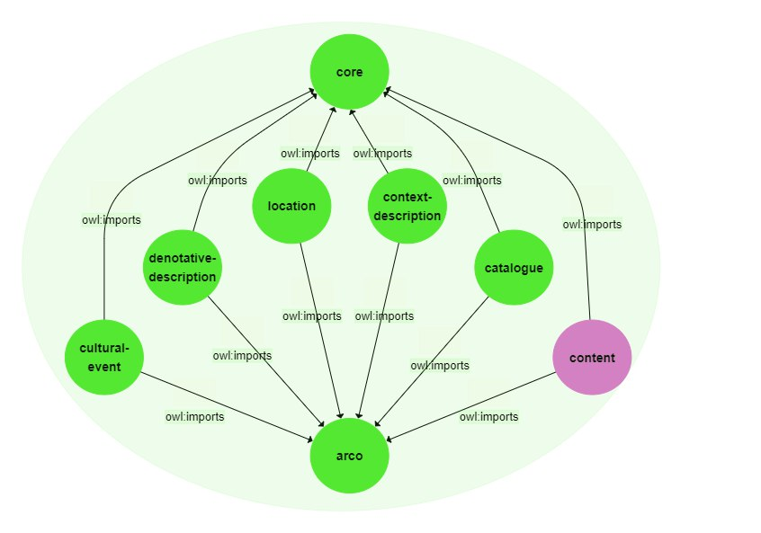

ArCo's Ontology:
The project aims at defining whether it would be possible to use or expand ArCo's ontology for describing a TV serie from the point of view of its content, and particularly its playing characters.
ArCo (Architecture of Knowledge) is a project involving the Italian Ministry of Cultural Heritage ICCD and the Institute of Cognitive Sciences and Technologies of CNR that has developed a network of ontologies able to model the wide domain of Italian cultural heritage combining the authoritativeness of ICCD standard and the interoperability of LOD.
At the moment, its network is articulated in seven ontology modules, each of which enables the description of a different and specific aspect of a cultural property:
- The arco module imports all the other modules and represents the ontology network itself
- The core module represents general concepts that can be used in the different modules of the whole network
- The catalogue module models concepts related to the ICCD Catalogue, and in particular catalogue records, that is the XML files recording all data gathered by a cataloguer on a particular Italian cultural property
- The location module all the information referred to a cultural property that cover spatial and geometry aspects
- The denotative description module encodes the characteristics of a cultural property observed during the cataloguing process, e.g. measurements, materials, techniques, etc
- The context description module represents the context of cultural properties, in a broad sense, including the information related to: authors, collectors, copyright holders, inventories, bibliography, etc.
- The cultural events module is dedicated to cultural events and exhibitions involving a cultural property
In modelling through this network the cultural property we have chosen for this project - the worldy popular TV serie 'Breaking Bad' by Vince Gilligan - we suddenly met a gap related to the most interesting aspect of it and many other cultural properties: the content.
Although ArCo is richly deepen from the catalographic perspective, it almost totally misses ontology entries able to describe the content of a cultural product, such as the narratological and sociological aspects involved in some depicted subjects.
In order to reach our purpose, we would have had to consider an expansion of it in the direction of content, that would have represented a new module, the eighth in ArCo's network.
The whole project is about our attempt of demonstrate whether such a process would be firstly a possible one and then meaningful for ArCo itself.

Img 1. A graph visualizing ArCo's seven-module network ontology plus our proposal for a eighth one.